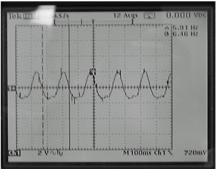

Operating Documentation
Direction 5133315-3, Rev# 14
Signa EXCITE HD 1.5T Service Methods
Module Version 4.0, Version Date 11/19/10
Operating Documentation |
| Required Persons | Preliminary Reqs | Procedure | Finalization |
|---|---|---|---|
| 2 | Not Applicable | 30 mins | Not Applicable |
The Dock Motor Speed Procedure is required as part of setup and calibration. Refer to opening magnet enclosure covers and adjusting patient dock hardware if related Dock problems arise.
Motor speed is affected by magnetic field effects on the motor, and the moving parts in the patient transport. The dock motor speed cannot be factory preset; it must be adjusted for each individual site. The motor speed is set for an unloaded condition that equates to 360 rpm (or six revolutions/second).
The adjustment can be made using the preferred Two-Man Procedure — Dock Motor Speed Adjustment, Two-Man Procedure or using One-Man Procedure — Dock Motor Speed Adjustment, One-Man Procedure when short handed.
A DMM is required to verify power is off. The MEPS measurement for the Dock Motor Speed Adjustment requires one oscilloscope probe, but the SSM differential measurement for the Dock Motor Speed Adjustment requires two probes because the Power Supply circuitry is floating.
| Item | Qty | Effectivity | Part# | Manufacturer | |
|---|---|---|---|---|---|
| Oscilloscope Probes | 2 | - | - | - | |
| Digital Multi-Meter (DMM) | 1 | - | - | - | |
| ||||
| Strong Magnetic Field! | ||||
| Ferrous materials can become dangerous projectiles in the presence of the magnetic field Produced by the Signa Magnet. | ||||
| Do not Bring any ferromagnetic tools or equipment into the magnet room. |
| ||||
| SHOCK HAZARD! | ||||
| THE SSM IPS (Integrated Power Supply) ASSEMBLY CIRCUITRY IS FLOATING. | ||||
| DO NOT REFERENCE TEST EQUIPMENT TO GROUND CHASSIS OR ANY GROUND TEST POINTS. |
| Condition | Reference | Effectivity |
|---|---|---|
Upgraded HDx system with SSM. HDx systems with the PHPS do not have this adjustment. | - | - |
| ||||
| The system must be set up for a Body mode protocol and the [Prepare to Scan] soft key selected initially. Pulse Body mode once at TG of 0. Do NOT open the SSM top cover for one minute after the system transitions from Head, Surface, M/C or MNS mode to Body mode). Failure to follow these instructions resulted in the Dynamic Disable IGBT Circuitry (Direct Drive, Body1, Body2) overheating and shorting requiring CPD replacement. | ||||
Set up a Body mode protocol and select the [Prepare to Scan] soft key. Wait five minutes before opening the SSM cover. (Refer to the Notice above for detail.)
Dock the patient transport, and remove the head coil carriage from the patient table if necessary. Lower table to fully down position using the foot pedals at either end of the patient transport.
Remove power to dock. Refer to appropriate OSHA Lock-Out/Tag-Out Requirements.
RF/Pen Cabinet: LOTO Circuit Breaker MR1 A14 CB6 at rear of the cabinet.
RF/Pen II, RF/PDU or RF Accessories Cabinet: LOTO Circuit Breaker MR1 A20 CB4 at rear of SSM in the cabinet.
Verify that voltage between Dock and Dock RTN is 0 VDC using a DMM:
RF/Pen Cabinet: Locate the MEPS Module at the bottom of the cabinet and the test point strip at the center of the rear panel of the MEPS module. Connect the DMM.
RF/Pen II and RF/PDU or RF Accessories Cabinet: Locate the SSM at the bottom of the RF Accessories Cabinet and the test point strip at the center of the rear panel of the SSM. Connect the DMM.
Remove the four screws and four No. 10 flat washers securing the MEPS or SSM module to the cabinet, and slide the MEPS or SSM module out from the front of the cabinet.
RF/Pen Cabinet: Loosen the three 4-40 captive screws on the top cover of the MEPS module, and open and remove the lid. Locate the High Current power supply board that contains the Voltage Potentiometer R38.
Pull out the RFSC and loosen the captive screws on the top cover of the SSM to gain access to the white plunger switch.
Open the lid, and pull the High Voltage enable plunger switch to the Up position.
| ||||
| Do NOT disable the HV at the front of the SSM in the RF/Pen II, RF/PDU or RF Accessories Cabinet. | ||||
RF/Pen II, RF/PDU or RF Accessories Cabinet: Remove the twelve 4-40 screws on the top cover of the SSM. Open the lid and locate the Dock/Light power supply board that contains the voltage potentiometer R80.
RF/Pen Cabinet: Connect Channel 1 oscilloscope lead to TP3 (Dock 38.5V), and connect Channel 1 oscilloscope ground reference lead to TP1 or TP4 or TP7 (SGND).
Set Channel 1 trace to zero reference graticle on the oscilloscope display.
Adjust time/div to approximately 100 mS/div. Set oscilloscope channels to AC Coupling.
RF/Pen II and RF/PDU Cabinet: Connect Channel 1 oscilloscope lead to TP3 (38.5V, Dock). Connect Channel 2 oscilloscope lead to TP4 (DOCK-RTN).
Connect both oscilloscope lead grounds together, and isolate ground leads with tape as required to ensure there is no contact with electrical circuitry.
Set both channels to ground reference, and set Channel 2 to add/invert.
Adjust both ground leads to the same zero reference graticle on the oscilloscope display. Adjust time/div to approximately 100 mS/div, and set oscilloscope channels to AC Coupling.
| ||||
| SHOCK HAZARD! | ||||
| THE SSM IPS (Integrated Power Supply) ASSEMBLY CIRCUITRY IS FLOATING. | ||||
| DO NOT REFERENCE TEST EQUIPMENT TO GROUND CHASSIS OR ANY GROUND TEST POINTS. |
Lower the table to the full down position using the Table Down pedal and proceed as follows:
RF/Pen Cabinet: Switch on Circuit Breaker MR1 A14 CB6.
RF/Pen II and RF/PDU or RF Accessories Cabinet: Switch on Circuit Breaker MR1 A20 CB4.
Monitor output at test points while a second person presses the Table Up pedal on the dock, raising the table. Only perform this procedure with the system in the Body mode, or the Direct Drive IGBT circuitry may short. (Refer to the Notice at the beginning of this section for details.)
| NOTE: | The following measurement is only valid during the period of table top upward motion. Once the table top reaches the maximum height, the dock motor will be too loaded to provide accurate adjustment measurement. |
RF/Pen Cabinet: Adjust R38 to obtain a voltage waveform of six pulses per second, ±1/4 pulse per second. (Illustration below shows 5 and 3/4 pulses/second). See Note above.
RF/Pen II Cabinet and RF/PDU Cabinet: Adjust R80 to obtain a voltage waveform of six pulses per second, ±1/4 pulse per second. (Illustration below shows 5 and 3/4 pulses/second). See Note above.
Illustration 1: Six Pulses per Second Oscilloscope Display

Repeat this procedure as necessary or whenever the Dock circuit board is replaced.
| ||||
| The system must be set up for a Body mode protocol and the [Prepare to Scan] soft key selected initially. Pulse Body mode once at TG of 0. Do NOT open the SSM top cover for one minute after the system transitions from Head, Surface, M/C or MNS mode to Body mode). Failure to follow these instructions resulted in the Dynamic Disable IGBT Circuitry (Direct Drive, Body1, Body2) overheating and shorting requiring CPD replacement. | ||||
Set up a Body mode protocol and select the [Prepare to Scan] soft key. Wait five minutes before opening the SSM cover. (Refer to the Notice above for detail.)
Remove power to dock. Refer to appropriate OSHA Lock-Out/Tag-Out Requirements.
RF/Pen Cabinet: LOTO Circuit Breaker MR1 A14 CB6 at rear of cabinet.
RF/Pen II, RF/PDU or RF Accessories Cabinet: LOTO Circuit Breaker MR1 A20 CB4 at rear of SSM in cabinet.
Verify that voltage between Dock and Dock RTN is 0 VDC using a DMM.
RF/Pen Cabinet: Locate the MEPS Module at the bottom of the cabinet and the test point strip at the center of the rear panel of the MEPS module. Connect the DMM.
RF/Pen II, RF/PDU or RF Accessories Cabinet: Locate the SSM at the bottom of the cabinet and the test point strip at the center of the rear panel of the SSM. Connect the DMM.
Remove the four screws and four No. 10 flat washers securing the MEPS or SSM module to the cabinet, and slide the MEPS or SSM module out from the front of the cabinet.
RF/Pen Cabinet: Loosen the three 4-40 captive screws on the top cover of the MEPS module, and open and remove the lid. Locate the High Current power supply board that contains the Voltage Potentiometer R38.
Pull out the RFSC and loosen the captive screws on the top cover of the SSM to gain access to the white plunger switch.
Open the lid, and pull the High Voltage enable plunger switch to the Up position.
| ||||
| Do NOT disable the HV at the front of the SSM in the RF/Pen II, RF/PDU or RF Accessories Cabinet. | ||||
RF/Pen II, RF/PDU or RF Accessories Cabinet: Remove the twelve 4-40 screws on the top cover of the SSM. Open the lid and locate the Dock/Light power supply board that contains the Voltage Potentiometer R80.
RF/Pen Cabinet: Connect Channel 1 oscilloscope lead to TP3 (Dock 38.5V), and connect Channel 1 oscilloscope ground reference lead to TP1 or TP4 or TP7 (SGND).
Set channel 1 trace to zero reference graticle on the oscilloscope display.
Adjust time/div to approximately 100 mS/div. Set oscilloscope channels to AC Coupling.
RF/Pen II, RF/PDU or RF Accessories Cabinet: Connect Channel 1 oscilloscope lead to TP3 (+38.5V, Dock). Connect Channel 2 oscilloscope lead to TP4 (DOCK-RTN).
Connect both oscilloscope lead grounds together, and isolate ground leads with tape as required to ensure there is no contact with electrical circuitry.
Set both channels to ground reference, and set Channel 2 to add/invert.
Adjust both ground leads to the same zero reference graticle on the oscilloscope display. Adjust time/div to approximately 100 mS/div, and set oscilloscope channels to AC Coupling.
| ||||
| SHOCK HAZARD! | ||||
| THE SSM IPS (Integrated Power Supply) ASSEMBLY CIRCUITRY IS FLOATING. | ||||
| DO NOT REFERENCE TEST EQUIPMENT TO GROUND CHASSIS OR ANY GROUND TEST POINTS. |
Lower the table to the full down position using the Table Down pedal.
Place a weight on the Table Up and Table Down foot pedals on the Dock. (Weighting of both pedals will ensure that the table does not top out and pull more current than normal.) Proceed as follows:
RF/Pen Cabinet: Switch on Circuit Breaker MR1 A14 CB6.
RF/Pen II, RF/PDU or RF Accessories Cabinet: Switch on Circuit Breaker MR1 A20 CB4.
| NOTE: | Only perform this procedure with the system setup for a Body mode protocol. (Refer to the Notice at the beginning of this section for details.) |
Monitor output at test points. This test setup measurement is valid only for approximately 12 seconds.
RF/Pen Cabinet: Adjust R38 to obtain a voltage waveform of six pulses per second, ±1/4 pulse per second. (Illustration below shows 5 and 3/4 pulses/second.)
RF/Pen II, RF/PDU or RF Accessories Cabinet: Adjust R80 to obtain a voltage waveform of six pulses per second, ±1/4 pulse per second. (Illustration below shows 5 and 3/4 pulses/second.)
Illustration 2: Six Pulses per Second Oscilloscope Display

Repeat this procedure as necessary or whenever the Dock circuit board is replaced.
No finalization steps.